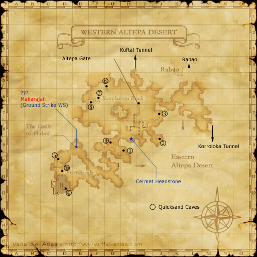
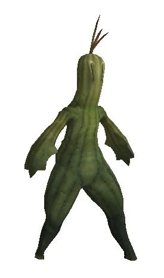
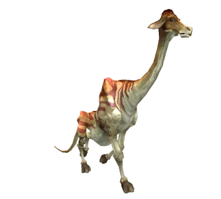
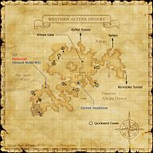

Description
Western Altepa Desert is an outdoor area in Kuzotz.
Map

Involved in Quests / Missions
| Quest / Mission | Type | Starter | Location |
|---|---|---|---|
| Beastmen Treasure (Kuzotz Region) | General | Peddlestox | Western Altepa Desert (pos=L-7) |
| Don't Forget the Antidote | General | Edigey | Rabao (pos=F-9) |
| For the Birds | General | Koblakiq | Oldton Movalpolos (pos=H-11) |
NPCs
Notorious Monsters
| Name | Level | Drops | Steal | Family | Spawns | Notes |
|---|---|---|---|---|---|---|
| Cactuar Cantautor | 56 | Cactus Arm Cactus Stems Cactuar Needle Kung Fu Shoes | Cactuar Needle |  SabotendersImage source | — | A, H |
| Celphie | 47-48 | Dhalmel Meat Dhalmel Whistle Giant Femur | — |  DhalmelImage source | — | A, L |
| King Vinegarroon | 80-85 | Venomous Claw Ace's Helm Heavy Shell | — |  ScorpionsImage source ScorpionsImage source | — | — |
Regular Monsters


Event Monsters
| Name | Level | Drops | Steal | Family | Spawns | Notes |
|---|---|---|---|---|---|---|
| Eastern Sphinx | — | — | — |  ManticoresImage source ManticoresImage source | 1 | Spawned Mission: Return of the Talekeeper |
| Maharaja | — | — | — |  TigersImage source TigersImage source | 1 | Spawned Quest: Inheritance; A |
| Sabotender Enamorado | — | — | — | SabotendersImage source | 1 | Spawned Mission: Leaute's Last Wishes |
| Western Sphinx | — | — | — | ManticoresImage source | 1 | Spawned Mission: Return of the Talekeeper |
EXP camps
Arrival and hazards
Central book. Spiders first, dhalmels next. The wider desert contains stronger anticans and manticores.
Story walkthroughs in this area
| Story | Mission / quest |
|---|---|
| RoZ 5 | Headstone Pilgrimage |
| RoZ 6 | Through the Quicksand Caves |
| RoZ 12 | The Mithra and the Crystal |
| AMK 9 | Rescue! A Moogle's Labor of Love |
References
External references describe their own server or retail rules. Documented Zenith changes take precedence.
Map credits: Map 1 — HorizonXI Wiki. Original game maps © SQUARE ENIX; redrawn maps retain the credited authorship and license.

Supplemental NPC names and exits are from the base-world snapshot; expansion conditions can affect availability.
Additional level-75 reference


|
This enormous expanse of desert covers the entire western half of Zepwell Island. Out of its center rises Revelation Rock, which was once used by the Galka as a location for spiritual training. To the northeast, one can find the largest oasis of the desert-Rabao. Connecting Areas |
If you see a quest that is listed as Yes but is not working properly please report it on GitHub. Make sure to list as many details as possible when describing what is not working. If there happens to already be a report on that quest regarding your problem, just add your experience to that report.
Legend
Yes = Quest is in game and working
Yes but bugged = Quest is in game but not working properly and being worked on or in que to be worked on.
No = Not in game yet but is planned
Involved in Quests/Missions
| Quest | Type | Starter | Location | Available? |
| Beastmen Treasure (Kuzotz Region) | General | Peddlestox | Western Altepa Desert (L-7) | No |
| Don't Forget the Antidote | General | Edigey | Rabao (F-9) | |
| For the Birds | General | Koblakiq | Oldton Movalpolos (H-11) | |
| Mission | Country | Starter | Location | |
| San d'Oria Mission 6-1: Leaute's Last Wishes | San d'Oria | San d'Orian Gate Guard | San d'Oria | |
| Bastok Mission 6-1: Return of the Talekeeper | Bastok | Bastok Gate Guard | Bastok | |
| Zilart Mission 5:Headstone Pilgrimage | Zilart | --- | --- | |


Notorious Monsters Found Here
|
Name |
Level |
Drops |
Steal |
Family |
Spawns |
Notes | |||||||
|
56 |
1 |
A, H | |||||||||||
|
47-48 |
1 |
A, L | |||||||||||
|
Unknown |
|||||||||||||
|
80-85(?) |
1 (?) |
A,L,T(H) | |||||||||||
|
Unknown |
1 |
A | |||||||||||
|
Unknown |
1 |
||||||||||||
|
Unknown |
|||||||||||||
|
HP = Detects Low HP; M = Detects Magic; Sc = Follows by Scent; T(S) = True-sight; T(H) = True-hearing JA = Detects job abilities; WS = Detects weaponskills; Z(D) = Asleep in Daytime; Z(N) = Asleep at Nighttime | |||||||||||||
Mobs Found Here
|
Name |
Level |
Drops |
Steal |
Family |
Spawns |
Notes | |||||||
| Antican Eques | 45 - 49 | Antica |
5 |
A, L, H, Sc | |||||||||
| Antican Essedarius | 41 - 45 | Antica |
8 |
A, L, H, Sc | |||||||||
| Antican Hoplomachus | 54 - 58 | Antica |
29 |
A, L, H, Sc | |||||||||
| Antican Lanista | 54 - 58 | Antica |
40 |
A, L, H, Sc | |||||||||
| Antican Retiarius | 45 - 49 | Antica |
12 |
A, L, H, Sc | |||||||||
| Antican Secutor | 54 - 58 | Antica |
25 |
A, L, H, Sc | |||||||||
| Apsaras | 40 - 42 | Pugil |
Fishing |
A, H | |||||||||
| Bigclaw | 45 - 52 | Crab |
Fishing |
A, H | |||||||||
| Cactuar | 48 - 53 | Sabotender |
37 |
A, H | |||||||||
| Desert Beetle | 47 - 51 | Beetle |
100 |
L, S, Sc | |||||||||
| Desert Dhalmel | 44 - 48 | Dhalmel |
23 |
L, S, Sc | |||||||||
| Desert Manticore | 53 - 57 | Manticore |
16 |
A, S, Sc | |||||||||
| Desert Spider | 40 - 44 | Spider |
30 |
L, H | |||||||||
| Desert Worm | 43 - 47 | Worm |
24 |
A, H | |||||||||
| Earth Elemental | 56 - 58 | Elemental |
6 |
M | |||||||||
| Fallen Knight | 50 - 54 | Skeleton |
9 |
A, H, HP | |||||||||
| Fire Elemental | 56 - 58 | Elemental |
6 |
M | |||||||||
| Goblin Bouncer | 51 - 55 | Goblin |
2 |
A, L, S | |||||||||
| Goblin Digger | 51 - 54 | Goblin |
1 |
A, L, S | |||||||||
| Goblin Enchanter | 51 - 55 | Goblin |
2 |
A, L, S | |||||||||
| Goblin Hunter | 51 - 55 | Goblin |
2 |
A, L, S | |||||||||
| Goblin Welldigger | 51 - 55 | Goblin |
2 |
A, L, S | |||||||||
| Ironshell | 40 - 42 | Crab |
Fishing |
A, H | |||||||||
| Lich | 49 - 53 | Skeleton |
6 |
A, H, HP | |||||||||
| Phorusrhacos | 57 - 60 | Roc |
9 |
A, L, S | |||||||||
| Razorjaw Pugil | 56 - 58 | Pugil |
Fishing |
A, H | |||||||||
| Tulwar Scorpion | 53 - 56 | Scorpion |
31 |
A, H | |||||||||
|
HP = Detects Low HP; M = Detects Magic; Sc = Follows by Scent; T(S) = True-sight; T(H) = True-hearing JA = Detects job abilities; WS = Detects weaponskills; Z(D) = Asleep in Daytime; Z(N) = Asleep at Nighttime | |||||||||||||
Adapted from Eden Wiki: Western Altepa Desert · Contributors and history · CC BY-SA 4.0. Revision 46890. Layout, links and optional background text adapted for Zenith.